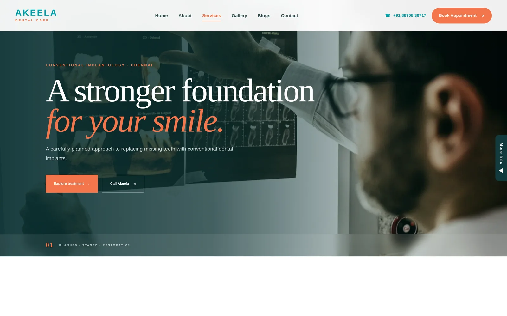
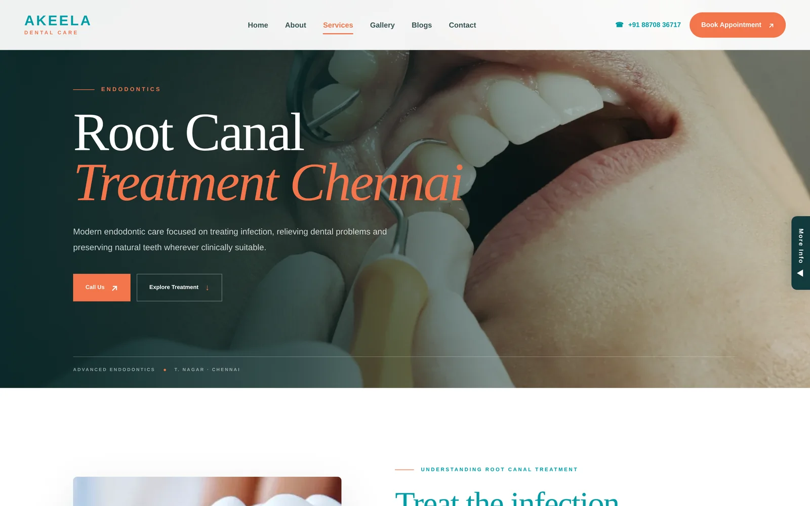
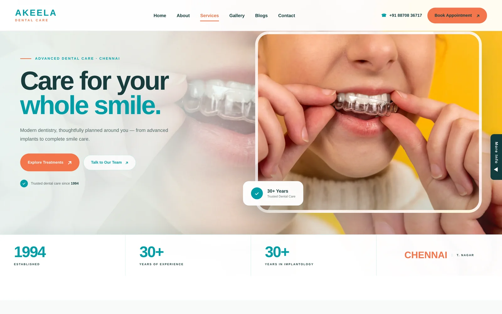
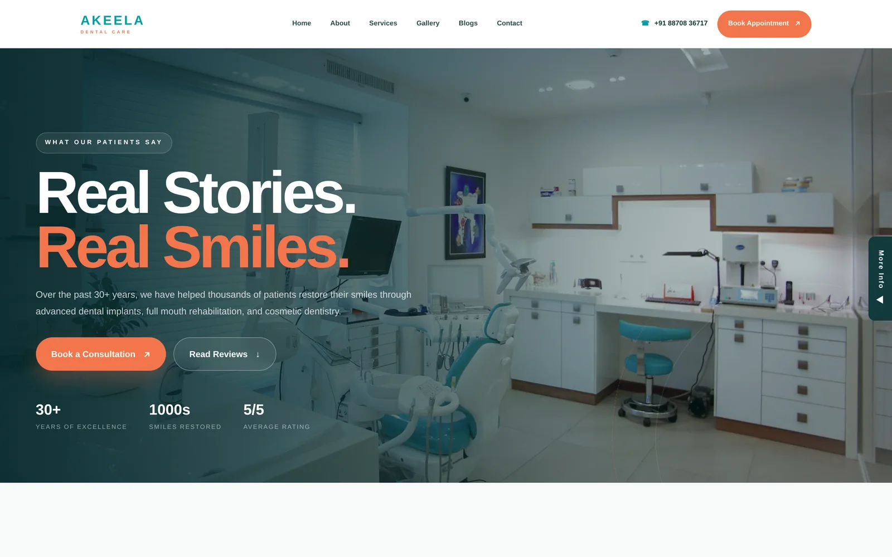
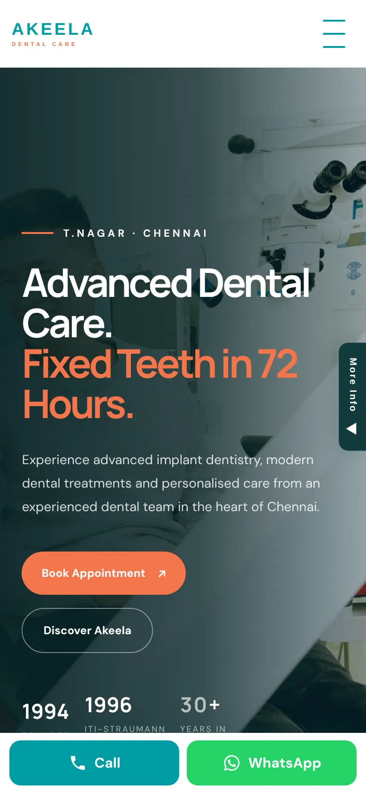

When someone needs a dentist, they search "dental implants near me" or "root canal treatment in T. Nagar", open the first few results and call. I built the Akeela Dental Care website and did its SEO so the clinic shows up for those searches and patients find a clear answer when they land. This is how the website was planned and what I did for SEO, so any dental clinic in Tamil Nadu can apply it.
Planning the website around treatments
Patients search for treatments, not for "services". So the website is built around them: dental implants, root canal treatment, aligners, orthodontics, cosmetic dentistry and more, each with its own page that explains the problem, the treatment, what to expect and how to book.
A single "Services" page with ten bullet points can't rank for ten different searches. Ten focused pages can, and each one answers the patient's question directly.


A treatments hub that links everything
A treatments overview page links every treatment page together, and each treatment page links back. This helps patients move between related treatments and helps Google understand how the site fits together.

On-page SEO on every page
Every page has a unique title and description written around what patients search, with the treatment and the area in it, one clear H1, readable headings, compressed images and internal links to related treatments. Structured data tells Google this is a dental clinic and where it is.
Reviews that build trust
Reviews are what patients read before they call, and they matter for local rankings too. The site has a dedicated patient reviews page with real stories and ratings, and the clinic asks happy patients for Google reviews.

Mobile first, with booking on every page
Most dental searches happen on a phone, so every page is designed for mobile first, with call, WhatsApp and Book Appointment buttons always within reach. Booking itself has its own system, which I've written about separately.


Search Console and tracking
Google Search Console is set up to watch indexing and see which searches bring visitors to each page. Calls, WhatsApp clicks and appointment requests are what matter, so those are what we track and review.